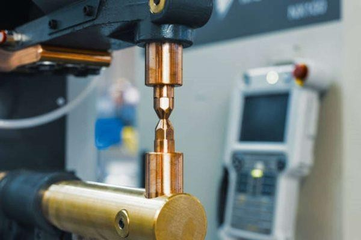
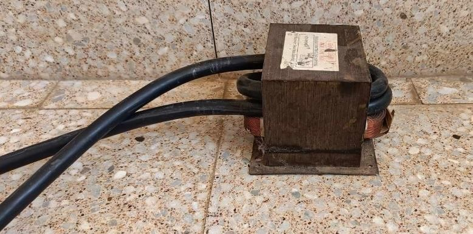
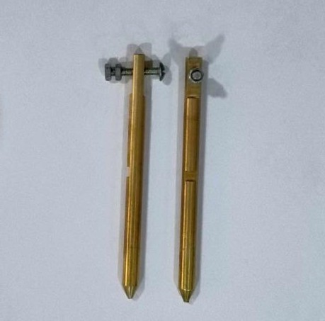
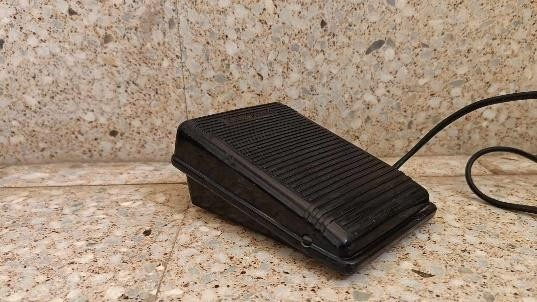
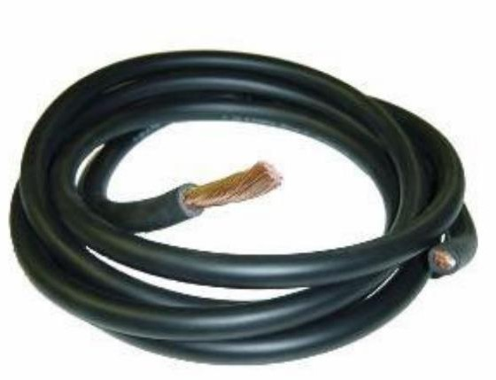
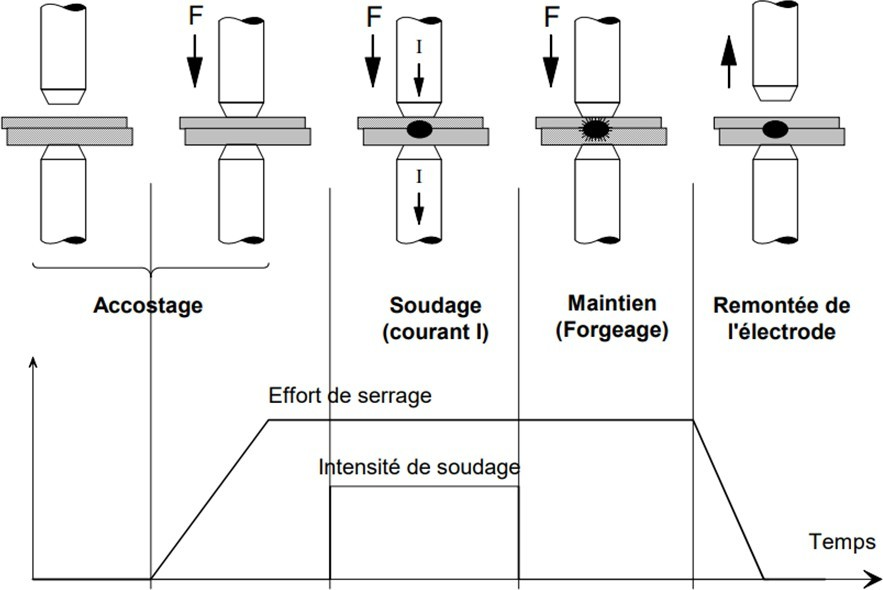
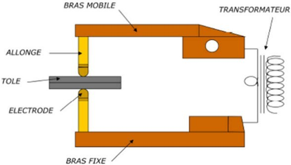
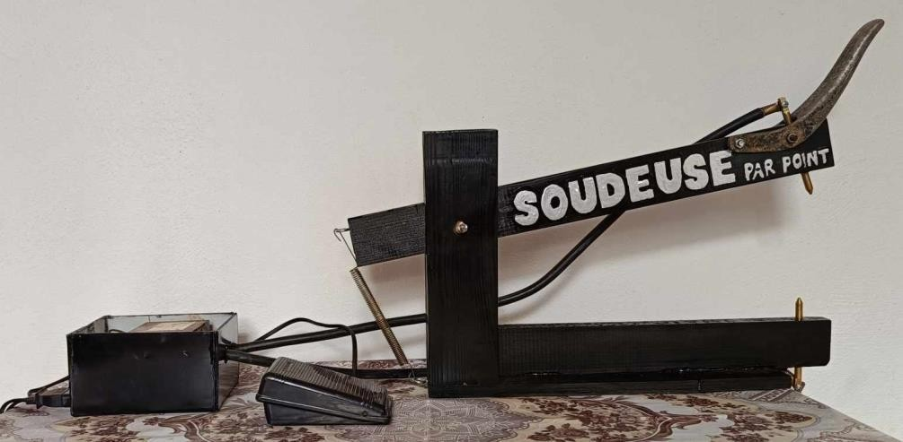

GÉNIE ÉLECTRIQUE · INSTRUMENTATION · MASTER 1
Machine à souder par pointe
Étude et réalisation d'un poste de soudage par résistance
Prototype de soudeuse par points construit à partir d'un transformateur de four à micro-ondes modifié : une très basse tension et un fort courant font fondre localement les tôles par effet Joule.
CONCEPTION & RÉALISATION
Du transformateur au point de soudure
Le transformateur d'un vieux micro-ondes a été démonté et son enroulement secondaire retiré. Il a ensuite été rebobiné avec un câble de plus forte section : moins de spires, donc une tension de sortie plus basse et un courant beaucoup plus élevé.
Des électrodes en cuivre, montées sur un support à deux bras et commandées par une pédale, appliquent le courant sur les tôles.




PRINCIPE DE SOUDAGE
Le cycle d'un point de soudure
Deux tôles sont serrées entre les électrodes. Le courant traverse l'assemblage et la chaleur dégagée, proportionnelle au carré de l'intensité (effet Joule), fait fondre une petite zone à l'interface.
- 1. Accostage : les électrodes serrent les tôles.
- 2. Soudage : le courant fait fondre l'interface.
- 3. Forgeage : la pression est maintenue, la soudure se solidifie.
- 4. Remontée : les électrodes se relèvent.

TEST & RÉSULTATS
Le dispositif soude bien


- Test sur de fines tôles d'inox soudées ensemble, avec étincelles visibles.
- Assemblage final correctement soudé : le prototype fonctionne.
- Le courant, la durée et l'effort des électrodes restent les paramètres clés de la qualité.
- Limite : procédé adapté aux tôles fines, avec accès aux deux faces du joint.
DÉMONSTRATION
La machine en fonctionnement : soudure de deux tôles d'inox.
- Mise en place : les deux tôles sont serrées entre les électrodes en cuivre.
- Soudage : l'appui sur la pédale envoie le courant, avec des étincelles visibles à l'interface.
- Résultat : les tôles restent assemblées par un point de soudure.